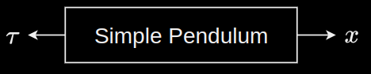

Simulation is all about advancing a system's state forward in time.
When all the forces impacting an object's motion, i.e. the dynamics, are understood, it is possible to implement a function that advances the state forward in time. The dynamics can be abstracted as a plant that will output the current state $x$, given the torque $\tau$ into the system.

An example of abstraction of a system's dynamics: Simple pendulum
This abstraction allows more easily a system viewpoint. The output of the system doesn't have to be the state $x$ - it can be a subset of the state, or simply some sensor attached to the system! Where there is full access to the state for feedback, i.e. full-state feedback, the system becomes more deterministic and the future value of the system can be predicted given the current time, state, and input of the system.
Software implementation
Typically, the software function is written in 2 stages:
Uncontrolled motion
The actuators aren't energised and the vehicle is purely under the influence of external forces. For example: a drone whose rotors are not spinning, is purely under the influence of gravity.
Controlled motion
State variables
Forces directly affect the acceleration of the system. Any kind of acceleration advances the state forward in time by $dt$ seconds. It first changes the velocity which changes the position. To montior changes in the state over time, these 2 variables need to be tracked and thus become part of the state.
If the rotors are spinning, there would be rotational velocity and angle included in the state variables.
Forward euler method
Consider a linear system with its system output $y$ as below:
$$\begin{align*}
\dot{x} &= Ax + Bu \\
y &= Cx
\end{align*}$$
A state sequence is discretised using the Forward Euler method as follows:
$$
\dot{x} \approx \frac{x_{k+1} - x_k}{h}
$$
$h$ is a discretisation time constant (a small real number)
$k$ denotes a discrete time instant after $kh$ time steps. $k = 0,1,2,..$
$x_k$ is an approximation of the state vector at the time instant $kh$, that is an approximation of $x(kh)$
$x(0)$ is assumed to be known.
The state-space model becomes:
$$\begin{align}
\label{eq:fEuler}
x_{k+1} &= \underbrace{(I + hA)}_{A_f}x_k + \underbrace{hB}_{B_f}u_k \\
y_k &= Cx_k \nonumber
\end{align}$$
$y_k, u_k$ are defined in the same manner as the discretised state variable $x_k$.
The discretised state sequence $x_1, x_2...$ is obtained by propagating \ref{eq:fEuler} from the initial condition $x_0$ using the control input sequence $u_0, u_1, u_2,\ldots$.
This approach might produce numerical instabilities within the discretised state vector $x_k$ where the state vector might diverge to infinity.
Backward Euler method
To overcome the numerical instability problem within the Forward Euler approach, it is preferable to discretise a state sequence using the Backward Euler method as follows:
$$
\dot{x} \approx \frac{x_{k} - x_{k-1}}{h}
$$
The state model that helps propagate the state forward from the initial condition $x_0$ using some control sequence becomes:
$$
x_k = \underbrace{(I - hA)^{-1}}_{A_b}x_{k-1} +
\underbrace{h(I - hA)^{-1}B}_{B_b}u_k
$$